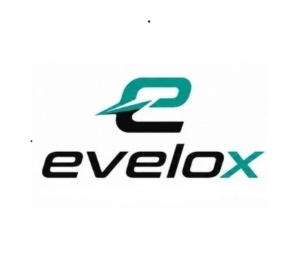
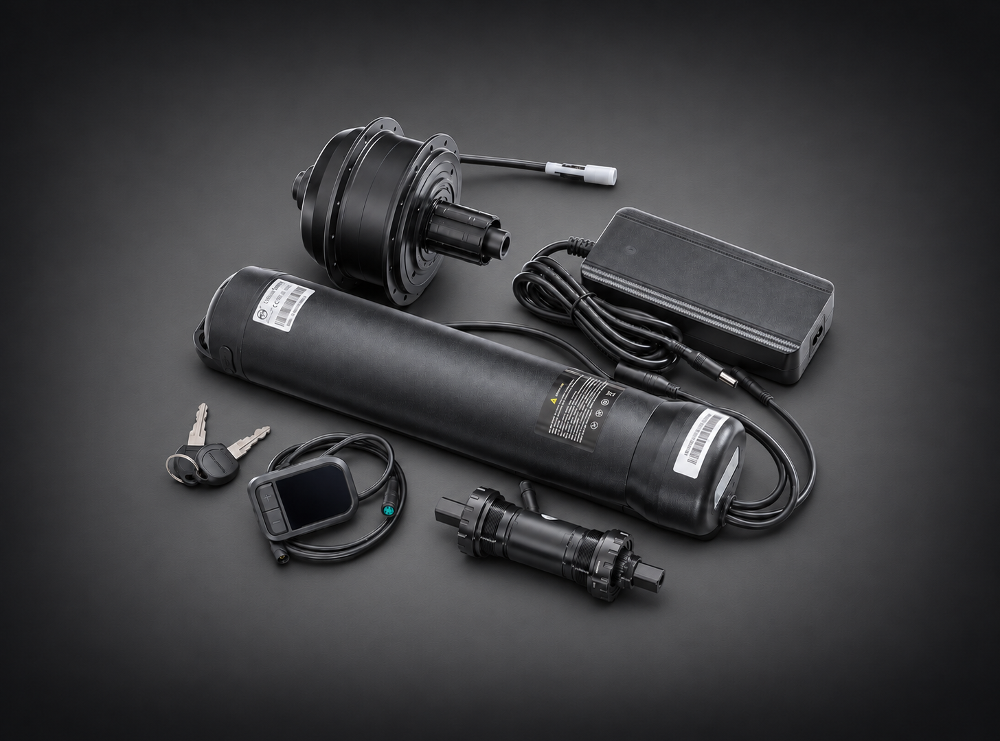

方案 A
135 mm 實心軸／快拆；建議 26、27.5 吋及 700C。
NT$17,800 起含稅

洽詢改裝由速度賦能，為自由而生。evelox 以後置馬達與中軸力矩感測，讓助力自然融入每一次踩踏。
探索電輔套件 ↗從拉丁文 Velox「迅捷靈活」出發
為都市騎士與探索者打造的電動輔助革命。
evelox 來自電能與迅捷的結合。從城市通勤到山林探索，我們重視自然的騎乘感受、合適的系統搭配與實際道路驗證。
Empowered by Motion. Inspired by Freedom.
保留核心規格，實際相容性仍須依中軸、後叉、煞車及車架狀況確認。
| 規格 | 方案 A | 方案 B | 方案 C |
|---|---|---|---|
| 後輪軸 | 實心／快拆 135 mm | 實心／快拆 135 mm | 貫通軸 142 mm |
| 建議輪徑 | 26／27.5 吋／700C | 20 吋 | 依車架及輪徑配置 |
| 額定電壓／功率 | 36V／250W | 36V／250W | 36V／250W |
| 最大扭力 | 40 Nm | 40 Nm | 35 Nm |
| 電機重量 | 2.8 kg | 2.0 kg | 1.9 kg |
| 防水等級 | IPX5 | IPX6 | IPX6 |
| 飛輪 | 卡式 HG 8–10 速 | 旋式 6–9 速 | 卡式 9–12 速 |

36V／250W 後置輪轂馬達與 BSA 68／73 mm 中軸力矩傳感器，踩多少、助多少。
135 mm 實心軸／快拆；建議 26、27.5 吋及 700C。
NT$17,800 起含稅
135 mm 實心軸／快拆；建議 20 吋小徑車。
NT$17,800 起含稅
142 mm 貫通軸；依輪徑與實際安裝規格選配。
NT$19,800 起含稅
九款不同車型的電輔升級實拍。實際安裝方式依車架與零件規格評估。
.jpg) 山地車改裝
山地車改裝後輪電機與下管電池搭配山地車架，保留原車運動輪廓。
 經典車改裝
經典車改裝將經典車架升級為電輔車，讓熟悉的騎乘旅程再次延伸。
.jpg) 都會車改裝
都會車改裝流線車架結合下管電池與後輪電機，呈現俐落的騎乘配置。
.jpg) 小徑車改裝
小徑車改裝小徑全避震車架配置電池及後輪電機，保留車款鮮明造型。
 平把車改裝
平把車改裝後輪電機與下管電池融入平把車架，維持簡潔外觀。
.jpg) 全避震車改裝
全避震車改裝經典全避震車架配置後輪電機與外掛電池，延續騎乘旅程。
.jpg) 折疊車改裝
折疊車改裝在小徑折疊車架安排電池與線組，兼顧結構及原有外觀。
.jpg) 山地車改裝
山地車改裝碳纖山地車升級電輔系統，延續經典車架的運動風格。
.jpg) 休閒車改裝
休閒車改裝後輪電機與下管電池整合於車架，呈現清爽的升級樣貌。
從車架相容、零件配置到續航及重量，先了解改裝時最常遇到的問題。
首先，請確認愛車是否採用 BSA 68/73 mm 標準螺紋式中軸，這是安裝 evelox 中軸力矩傳感器的基本條件。
中軸力矩傳感器是 evelox 電輔系統的關鍵零件，能依據實際踩踏力道調整助力，帶來自然、順暢的騎乘感受。
若不清楚中軸規格，歡迎提供車輛品牌、型號、年份，以及整車側面與中軸近照，由我們協助初步判斷。照片或 AI 辨識可作為參考，最終仍須確認實際尺寸、安裝空間與車況。
後輪安裝規格也是評估重點：
135 mm 後叉開檔，搭配快拆軸或實心軸：可評估使用方案 A 或方案 B。
142 mm 貫通軸：可評估使用方案 C，並確認軸徑及相關安裝規格。
130 mm 後叉開檔：部分早期公路車或小徑車採用此規格，須個別評估。
130 mm 車款可能涉及較窄的飛輪配置、止轉片位置、輪組置中及車架干涉等問題，不能只靠更換較薄飛輪就保證相容。
此外，我們也會確認煞車形式、輪徑、飛輪規格、電池安裝空間及車架狀況，再提出合適的改裝建議。
以 evelox 現行套件而言，壓入式中軸尚不在標準安裝範圍內。
不同電輔系統採用不同的踩踏偵測方式，並非所有系統都需要中軸力矩傳感器，但能否改裝，仍取決於整套系統與車架的相容性。
我們也持續關注將力矩感測整合於後輪馬達卡基的技術。合作供應商已發表相關產品，待完成性能、耐久及系統整合測試，並確認量產條件後，再評估導入。
套件主要包含：
後置輪轂馬達：額定功率 250 W，系統電壓 36 V。
已編輪後輪車圈：20 吋（406／451）、26 吋、27.5 吋或 700C，依車款選配。
電池：36 V／10 Ah，容量 360 Wh。
電池支架：含底座整合式控制器。
充電器：42 V／2 A。
智能車錶及車錶延長線。
中軸力矩傳感器。
鋁合金爪片及正負齒單盤：46T／48T／52T 擇一。
鋁合金曲柄一對。
實際搭配依車款及安裝需求確認；飛輪、鍊條與其他耗材是否更換，會於評估報價時說明。
主要施工內容如下：
拆除原有前變速器、前變速指撥、大盤、曲柄及中軸；原車若為單盤配置，則依實際狀況調整。
安裝中軸力矩傳感器、對應爪片、單盤及曲柄。
安裝已完成編輪的後置馬達輪組。
安裝電池支架、電池、車錶及系統線組。
依需求調整或更換飛輪、鍊條，校正鏈線與變速系統。
檢查煞車、輪組固定及各部件安裝狀況，完成實際試騎後交車。
我們會依原車條件安排配置，兼顧騎乘感受、日常操作與後續維護。
evelox 現行標準改裝採用單盤配置。
中軸力矩傳感器須搭配對應花鍵的爪片與齒盤，並配合後輪飛輪位置調整鏈線（chainline）。採用單盤較容易兼顧安裝空間、鏈線調整與爪片相容性，因此原有雙盤或三盤通常不予沿用。
單盤也能簡化變速操作，省去前變速器與部分零件。我們搭配的正負齒盤，又稱厚薄齒盤，可提升鏈條保持能力，降低掉鏈機率；仍須配合正確的鏈條長度、鏈線及後變速器設定。
齒數則依輪徑、路線與騎乘習慣，從 46T、48T 或 52T 中選擇。
evelox 現行系統採用外掛式電池，電池支架主要利用原車架的水壺架螺絲孔固定。
360 Wh 電池重量約 1.9 kg，是目前系統在重量、安裝方式及使用需求之間的配置選擇。若增加容量，通常也會增加電池重量，進而提高固定座及車架孔位在顛簸路面下承受的負荷。
不同車架的水壺孔結構、材質與狀況各有差異，不能單憑孔位相同，就認定能承受更重的電池。此外，電池外殼、支架、控制器與電氣規格也必須相容。
因此，目前統一採用 360 Wh 電池，並於安裝前檢查固定位置及車架狀況。
依車友實際道路騎乘測試，在騎士與車輛總重約 95 kg、使用第 1 段助力的條件下，搭配 evelox 360 Wh 電池，續航里程約可達 80～90 km，部分情況可更遠。
實際續航會受到路線坡度、風向、胎壓、助力段位、騎士踩踏出力及電池狀態等因素影響。上述數據為車友實測分享，供騎乘規劃參考。
依目前標準配置估算：
方案 A：整車淨增重約 5.5 kg。
方案 B：整車淨增重約 4.7 kg。
方案 C：整車淨增重約 4.6 kg。
實際重量會受到原車拆除零件、輪圈、飛輪、外胎及其他配置影響，仍以完工實測為準。
主要依據後輪軸規格、輪徑及使用需求選擇：
方案 A：適用於相容的 135 mm 快拆軸或實心軸車架，一般建議搭配 26 吋、27.5 吋及 700C 輪徑。
方案 B：同樣適用於相容的 135 mm 車架，一般建議搭配 20 吋輪徑。
方案 C：適用於相容的 142 mm 貫通軸車架，並依輪徑及安裝規格確認配置。
方案 A、B 的主要差異，在於馬達設計與繞線參數。依目前產品設定，方案 A 的最高轉速約比方案 B 低 10～15%，搭配較大輪徑時，著重扭力與轉速的平衡；方案 B 則以較高轉速配合小輪徑需求。
選擇馬達時，我們會綜合考量輪徑、負載、騎乘路線與散熱條件，安排合適的配置。
1. 依踩踏力道提供助力
由車錶、馬達、控制器、力矩傳感器及電池組成完整系統，依據實際踩踏力道調整助力，讓動力自然融入騎乘節奏。
2. 單盤搭配正負齒設計
簡化變速操作，配合適當鏈線與傳動設定，提升鏈條保持能力及使用順暢度。
3. 整合配置，兼顧外觀與維護
控制器整合於電池支架底座，依車架安排走線，盡可能保留原車風格；各主要部件亦可分別檢查與維護。
4. 重視系統搭配與實際驗證
除了馬達規格，也重視控制器、電池及力矩訊號之間的協調，透過實際道路騎乘，檢視起步、爬坡與長時間使用的表現。
5. 電池規格與來源可確認
依實際供貨批次採用 SDI、LG 或 Panasonic 等品牌電芯。電芯型號、電池規格、保固及相關保險資訊，以交車時提供的資料為準。